Radioattività
GEIGER COUNTER collegato a computer.
Semplice sistema per misurare la radioattività ambientale. Utilizzo del software Theremino geiger "Electronics design" di R.Chirio
Indice della pagina
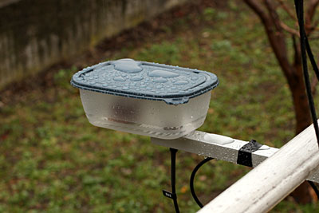
Marzo 2011/giugno 2015
In seguito al guasto della centrale giapponese di Fukushima nel Marzo 2011, sale l'allarme radioattività in tutto il mondo.
Questo sistema relativamente semplice, serve per monitorare la radioattività ambientale, a parte il reperimento del tubo geiger, la realizzazione non comporta particolari difficoltà.
La lettura dei dati su PC è basata su programma Theremino Geiger software (2013) oppure il più vecchio CDV di David Honig (2004), entrambi di libera distribuzione.
Per chi è appassionato di elettronica ed ha in casa un tubo geiger, può in poco tempo attivare un sistema di monitoraggio delle radiazioni e con sonda montata all'esterno casa, monitorare il livello di fondo.
Video pioggia radioattiva: https://youtu.be/qHlzF3xIY3E
SCHEMA ELETTRICO
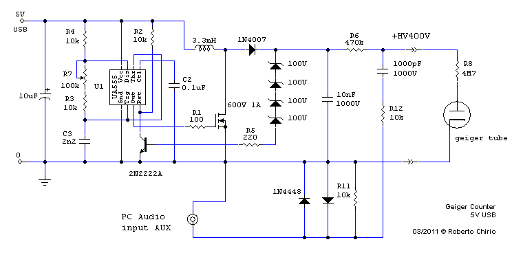
Descrizione
- L'HV viene generata con la tecnica della carica induttore ed successiva apertura veloce, (Step-up) non avendo praticamente assorbimento in uscita è possibile sfruttare tutta la tensione di apertura generata dall'induttore ed arrivare cosi a oltre 400V. (600V a vuoto senza zener)
- Il circuito funziona con tensione alimentazione 5V, è facilmente prelevabile da una porta USB, utilizzando un cavo USB, dei 4 conduttori quelli esterni sono il 5V, da verificare con tester il positivo (cavo rosso) e il negativo (cavo nero).
- Lo schema presentato assorbe meno di 10mA quindi non carica l'uscita neanche di un notebook funzionante a batteria. Adatto quindi anche per rilevamenti sul campo.
- Il driver usato è il noto 555 versione C-Mos, in questo caso usato come oscillatore astabile bloccato, il funzionamento viene inibito dalla chiusura del transistor Tr1 2N2222 o qualsiasi generico NPN.
- La frequenza di lavoro è di circa 2 kHz, il punto di lavoro ottimale viene trovato per il minore assorbimento dal 5V appunto variando la R7
- Il MosFet deve poter lavorare a 600 V pertanto si consiglia il tipo FQP2N60 o il BSP300. Si ottengo buoni risultati anche con transistor 2N13005 e simili facilmente reperibili dallo stesso circuito dell'induttore neon.
- Il partitore con 4 Zener da 100V 400mW sull'uscita serve per stabilizzare il valore di tensione, se la tensione aumenta oltre 400V il transistor va in conduzione, bloccando il 555 e di conseguenza il funzionamento dello step-up, in questa maniera avviene la stabilizzazione della tensione HV che è molto buona, migliore del 5%. lo spegnimento del driver è il sistema migliore per abbassare i consumi.
- Con 400V è possibile alimentare la maggior parte dei Tubi di fabbricazione Russa tipo il SBM-20 ed molte pancake.
- Utilizzando Zener da 50V o altri è possibile regolare la tensione a 450 o 500V a piacimento come richiesto dalle sonde in uso.
- Il collegamento del tubo all'esterno deve essere fatto con cavo RG58 o RG59 e connettori tipo BNC o meglio PL259. Non è importante l'impedenza del cavo a 50 o 75 Ohm, ma bensì l'isolamento che deve essere maggiore di 700/1000V. Importante anche curare l'isolamento dei connettori.
- Il condensatore da 1000pF 3kV serve per bloccare l'HV, (va bene un tipo ceramico, ma gli MKP sono migliori, anche per il circuito duplicatore) e per rilevare gli impulsi audio tramite il partitore R12/R11, i due diodi hanno il compito di proteggere l'ingresso PC dagli eventuali scariche atmosferiche elettrostatiche. Si può montare un eventuale condensatore da 100/330pF ai capi della R11 per ridurre disturbi o doppie commutazioni. Eventualmente per regolare meglio il segnale audio, al posto di R11 montare un trimmer in configurazione volume.
- Per uscita audio PC, si utilizza un cavetto audio schermato di buona qualità, da collegare all'ingresso PC meglio se su AUX, l'ingresso Microfono è sconsigliato in quanto troppo sensibile e può prendere disturbi.
Realizzazione
La realizzazione del Contatore Geiger per misure ambientali comporta avere delle conoscenze di elettronica, è necessaria un'attrezzatura ed esperienza nei montaggi elettronici.
Non si risponde per danni a cose e persone e per un uso improprio della realizzazione.
Attenzione che in uscita è presente una tensione di 400V anche se di bassissima energia, può essere pericolosa per chi non esperto.
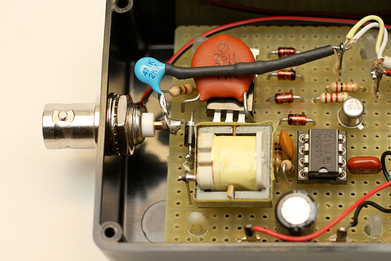
Ecco come si presenta il prototipo montato su una piastra millefori.
Per la sezione a bassa tensione, non ci sono particolari problemi per sistemare i componenti, mentre nella sezione HV prestare attenzione alle distanze e alla disposizione dei componenti e alle saldature sulle piazzole che devono avere maggiore distanza tra di loro, lasciare almeno 1 foro libero tra due punti HV.
Induttore L1
L'induttanza da 3,3mH serve per generare gli impulsi ad alta tensione fino ad un valore di 400V di picco, è facile da trovare in quanto presente all'interno del driver di tutti i tubi neon basso consumo, risparmio energia.
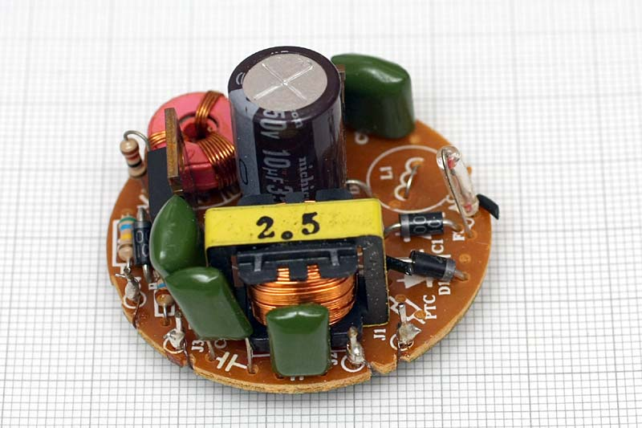
L'induttanza presente nelle lampade a basso consumo, può avere un valore da 1 a 4mH, in genere valori da 2 a 4 mH vanno benissimo per questa applicazione. Importante che sia una bobina impregnata con vernice e resina, questo per garantire un buon isolamento.
Tubo geiger
- SBM-20 Sonda tipo HOT DOG sensibile a Beta e Gamma
- Tensione nominale : 400-450V
- Sensibilità Cs137 : 800 CPM/mR/h
- Anno di fabbricazione 1991
- Altre caratteristiche le trovate in rete.
- E' facilmente acquistabile su Ebay.
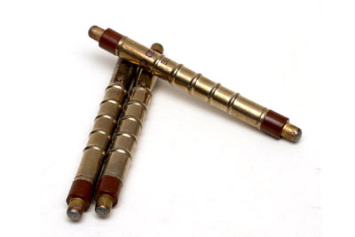
- Il tutto è fissato al balcone tramite una staffa in alluminio della lunghezza di 80cm.
- Si consiglia di stare il più lontano possibile dalla abitazione, in quanto molti materiali edili sono leggermente radioattivi e possono falsare la misura.
- Non ci sono problemi di lunghezza del cavo RG58 o RG59, importante che sia nuovo e di buona qualità per evitare dispersioni di HV.
- Per comodità si può anche usare cavo TV o satellite, importante curare gli isolamenti che devono tenere oltre 400V in presenza di acqua.
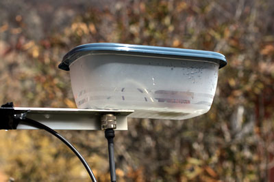
- Versione con 2 x SBM20
- Le sonde sono tenute alte vicino al coperchio, per meglio leggere la pioggia che si ferma sul coperchio.
- Con 2 SBM20 il valore di fondo è di 70-90 CPM.
- Le sonde sono collegate in parallelo con 1 sola resistenza in serie da 4M7.
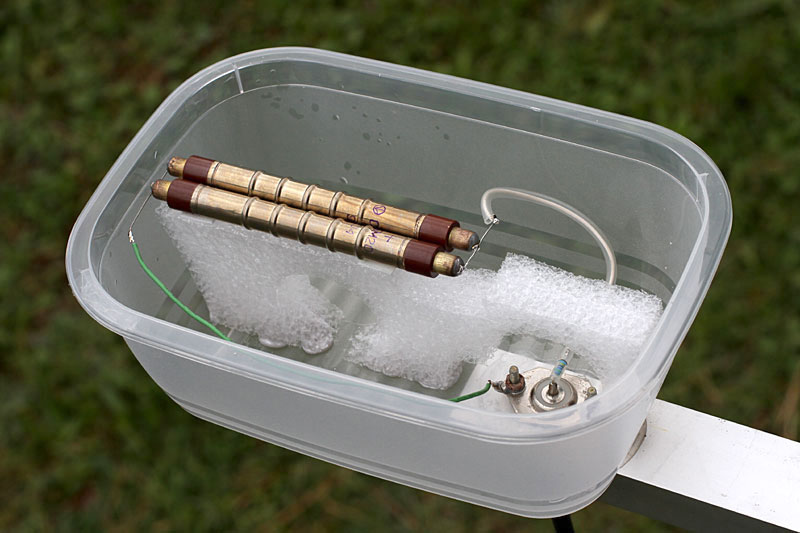
- Versione con 3 x SBM20
- Le sonde sono tenute alte, per meglio leggere la pioggia che si ferma sul coperchio.
- Le sonde sono collegate in parallelo con 1 resistenza in serie da 4M7 per ogni tubo.
- In questo caso tutto il circuito è montato dentro la scatola stagna.
- Con cavo schermato si porta alimentazione e uscita segnale.
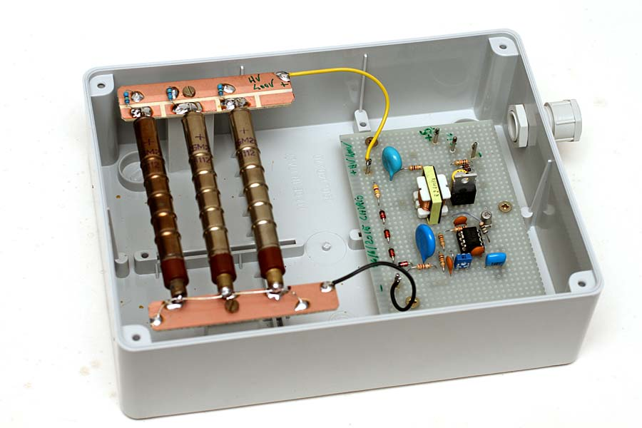
Taratura
- Collegare un voltmetro ad alta impedenza (300-1000Mohm) sull'uscita e dare alimentazione a 5V. Vedi Voltmeter HV 1000Mohm
- Il circuito non richiede particolari tarature, deve funzionare subito, la tensione deve salire fino a 400V e stabilizzarsi.
- La resistenza R7 va regolata per ottenere il minimo assorbimento dal 5V, sempre leggendo 400V con voltmetro alta impedenza.
- Collegare il cavetto audio all'ingresso AUX del PC.
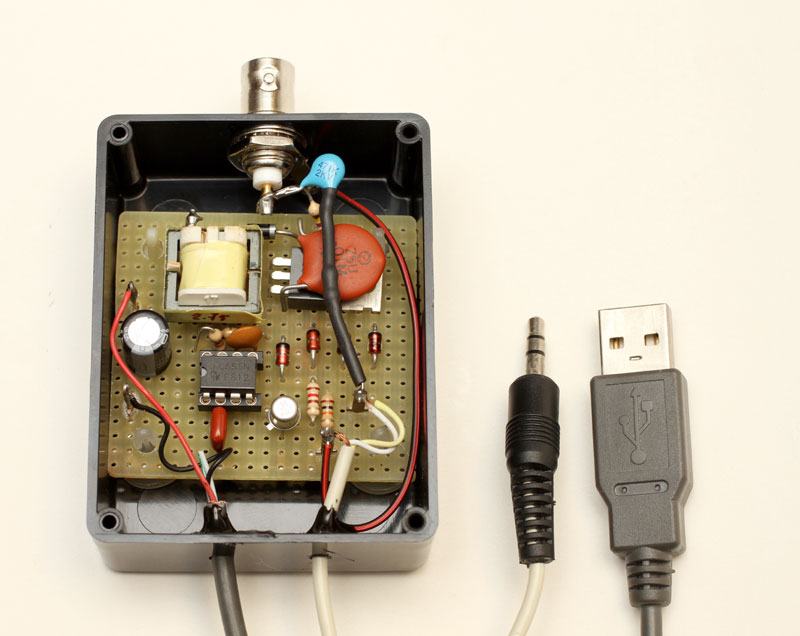
In mancanza di un Voltmetro ad alta impedenza si può realizzare un ottimo strumento utilizzando un multimetro con 10M ohm impedenza di ingresso, aggiungendo il partitore per alta tensione dello schema che segue.
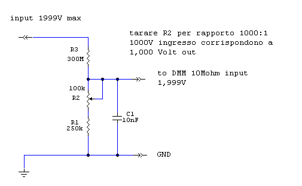
Versione semplificata del voltmetro HV, da collegare direttamente a un Multimetro (DMM). Sulla portata 2.000V, leggeremo x1000 quindi 2KVolt fs. Il trimmer cermet multigiri, serve per tarare con precisione il rapporto 1000:1.
Importante: il DDM deve avere 10Mohm di impedenza d'ingresso, alcuni di basso costo hanno solo 1Mohm, in genere la lettura è ancora possibile, eliminare la R1 e lasciare solo il trimmer, in questo caso usare la portata 200mV e tarare per un rapporto 10000:1.
La resistenza da 300Mohm si può acquistare ma è difficile da trovare, si può realizzare facilmente mettendo 30 resistenze da 10Mohm in serie, meglio se SMD.
{kind=link}
Campioni per taratura geiger
Disponibili campioni Pechblenda sotto piombo per la taratura Geiger Counter.
Contenitori diam. 29mm, valori a richiesta da 0,100 mRh a 2 mRh, emissione tipo:
- Alpha, Beta + gamma (Minerale libero)
- Beta + Gamma (Minerale inglobato in resina)
- Solo Gamma (Minerale schermato con alluminio 1mm)
Contattare: info@chirio.com

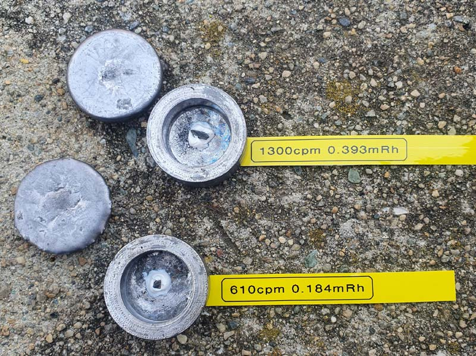
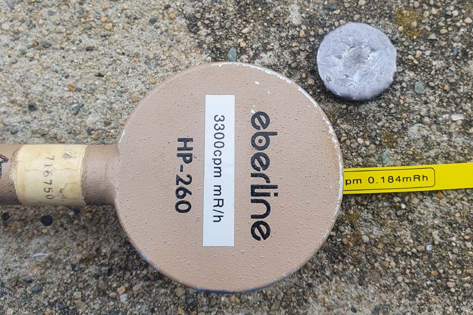
Due esempi di campioni con Minerale libero.
Tutti i campioni vengono testati con sonde Pancake tipo Eberline HP-260 oppure Ludlum 44-9
Misura dei valori di Fondo tramite THEREMINO Geiger Counter
- Download del programma da : http://www.theremino.com/downloads/radioactivity
- Ottimo programma, più recente (2013) rispetto CVD (2004). Visualizzazione grafica con interfaccia strumento analogico e traccia curva continua programmabile anche per molte ore.
- Gia in memoria i parametri delle sonde più usate dagli appassionati.
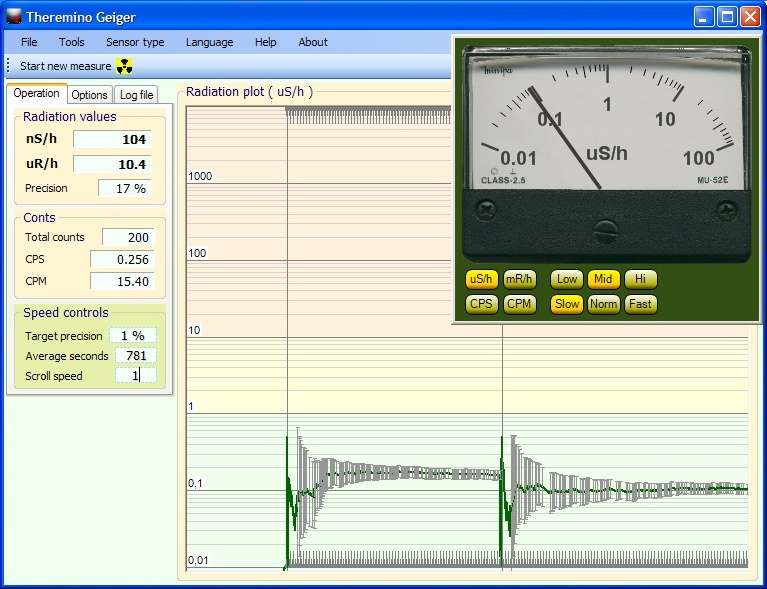
- Funziona perfettamente con il circuito proposto in questa pagina. Seguire attentamente le istruzioni riportate nell'Help del programma.
Misura dei valori su cenere di pellet
- La misura va fatta su cenere di pellet appena tolta dalla stufa, meglio usare quella della pulizia fornetto in quanto più pesante.
- La cenere va compressa dentro una scatolina, qua si è usato un fondo per candele in alluminio.
{kind=link}
- Leggere il valore del fondo per 15-20 minuti.
- In questo caso è stata usata una sonda pancake Russa 58mm, con buona sensibilità paragonabile alle LND 7312
- La schermatura con piombo ha ridotto del 70% il valore del fondo, ancora migliorabile se si realizza un forno completamente chiuso con il piombo da 2-3 cm.
{kind=link}
- Si nota molto bene la differenza tra il fondo (schermato) e la lettura sul contenitore di pellet.
- Non sono valori pericolosi, ma comunque leggermente radioattivi, quando il legno di pellet non dovrebbe dare nessuna lettura....
{kind=link}
Misura dei valori di Fondo tramite CDV Counter di David Honig
- Download del programma da diversi siti:
Download cdvcounter from sourceforge.net
oppure
http://www.anythingradioactive.com/downloads/DSRB88%20instructions.bak
- A questo si apre il programma CDV Counter, che non necessita di installazione, basta fare partire il file cdvcounter.exe da 212K, può girare anche da chiavetta.
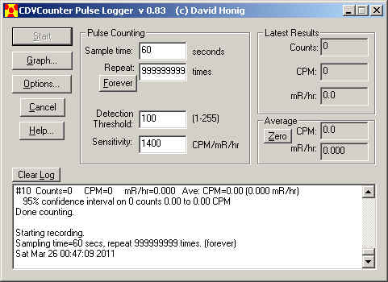
Impostare Sample time a 60s, Repeat a 999999 (Forever) e Detection threshold a un valore basso che permetta di riconoscere tutti i click, nel mio caso 10 funziona bene, ma è molto in funzione del segnale audio disponibile e se si sta utilizzando l'ingresso mic.
Sensitivity va settato sul valore della sonda in uso, per esempio, la SBM20 ha una sensibilità di 700-800 cpm/mR/h usando 2 x SBM20 mettiamo 1400 cpm/mR/h
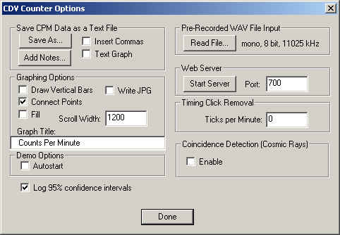
Entrare su Options e settare Scroll Width su 1200 o valori simili, da provare, in funzione dello schermo usato, in tal caso la scala avrà una visione temporale di circa 24h
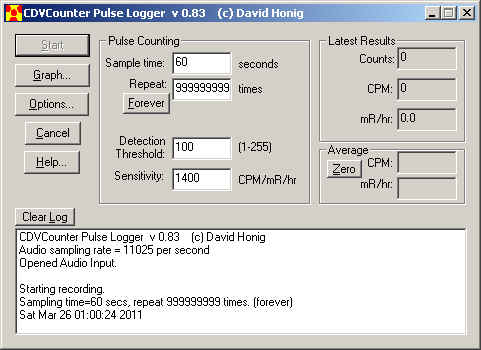
partire premendo Start e poi Graph per visualizzare il diagramma
| 15 aprile 2011 valori di fondo alti, pioggia con tracce radioattive | |
| 2 aprile 2011 valori di fondo bassi, sereno, sole caldo | |
| 1 aprile 2011 valori di fondo bassi, sereno, sole caldo | |
| 29 marzo 2011 valori di fondo alti, pioggia con tracce radioattive |
{kind=link}
{kind=link}
{kind=link}
{kind=link}
Commenti finali
- La configurazione pur essendo semplice, permette notevoli risultati, sempre sperando che serva solo a scopo didattico e non debba rilevare valori pericolosi. In caso di dubbi appoggiarsi ad un esperto di settore.
- Migliori risultati con il più recente programma Theremino geiger.
- Realizzando questo Geiger Counter PC, con l'ausilio di un fornetto con schermatura in piombo è possibile fare l'analisi degli alimenti tipo frutta e verdura. Posizionare a contatto della sonda, dopo alcune decine di minuti, se ci sono valori più alti vuol dire che gli alimenti hanno assorbito un po’ di radioattività, eventualmente contattare la USL o ARPA, per una analisi più approfondita.
Sempre utili gli appunti del Proff. Andrea Bosi su radioattività e Geiger:
http://spazioinwind.libero.it/andrea_bosi/index.htm
© Roberto Chirio: all rights reserved.